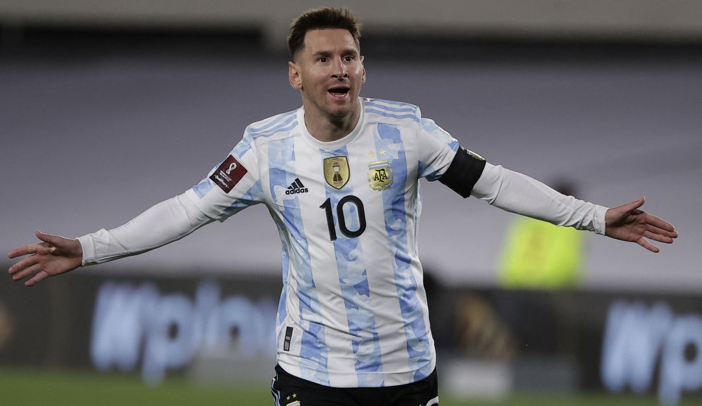

Récords de club
- Más goles en la fase de grupos de la UEFA Champions League: 74 (71 con el Barcelona)
- Más goles en los octavos de la UEFA Champions League: 28
- Más goles en la UEFA Champions League con un solo club: 120 (Barcelona)
- Más goles en competiciones de clubes de la UEFA con un solo club: 123 (Barcelona)
- Más premios del Balón de Oro: 7
- Más goles en la Liga: 474
- Más goles en la Liga en una sola temporada: 50 (2011/12)
- Más goles en un año natural: 79 en 2012 (91 incluyendo los goles con Argentina)
- Más 'hat-tricks' en la Liga: 36
- Jugador extranjero con más títulos de Liga: 10
- Más ESM Bota de Oro: 6
- Más títulos de clubes: 35

Selección nacional:
- Más partidos con Argentina: 158
- Más goles con Argentina: 80
- Más goles con una selección sudamericana: 80
- Jugador de Argentina más joven en marcar en una Copa Mundial: 18 años y 357 días